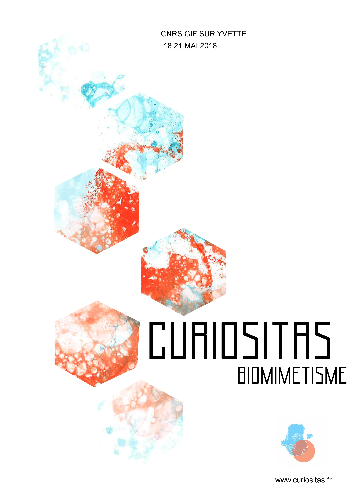
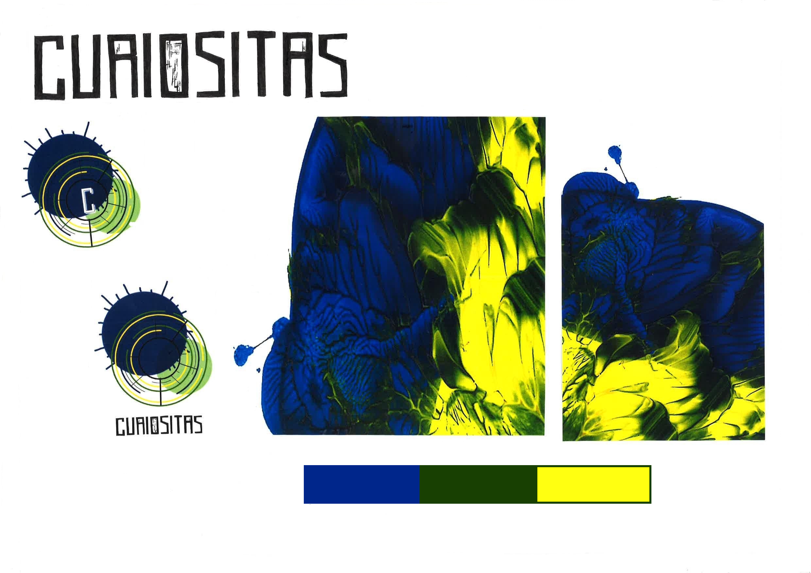
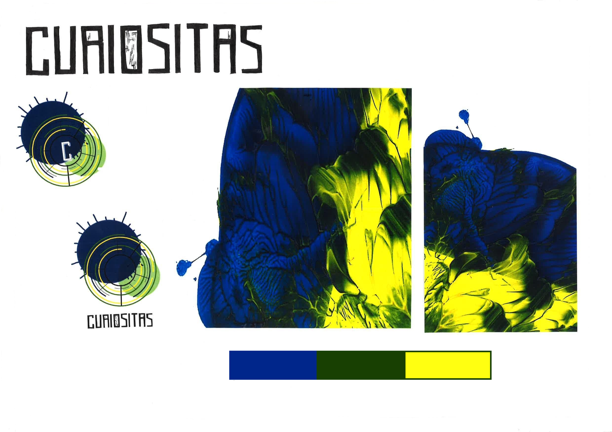
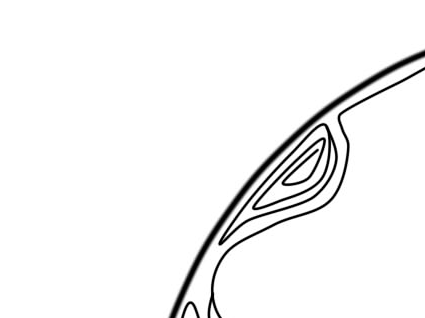

Curiositas, Manaa, 2017

Curiositas est un projet réalisé en MANAA dans le cadre de la discipline Design Graphique. Il s’agissait de créer un univers graphique pour le festival unissant Arts et Sciences : Curiositas. Ainsi, suite à des expérimentations plastique (bulles de savon et d’encres colorées, peinture acrylique), j’ai procédé à la création de plusieurs planches d'observation, proposant des univers et logos différents pour la réalisation d'une identité visuelle.
 

Planche «Curiositas», logos réalisés numériquement, expérimentations en acrylique, savon et encres colorées

gif curiositas